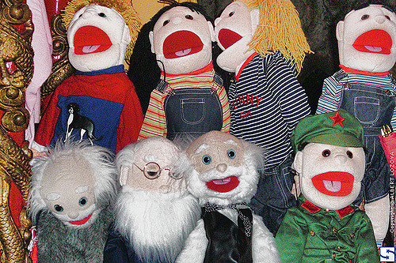
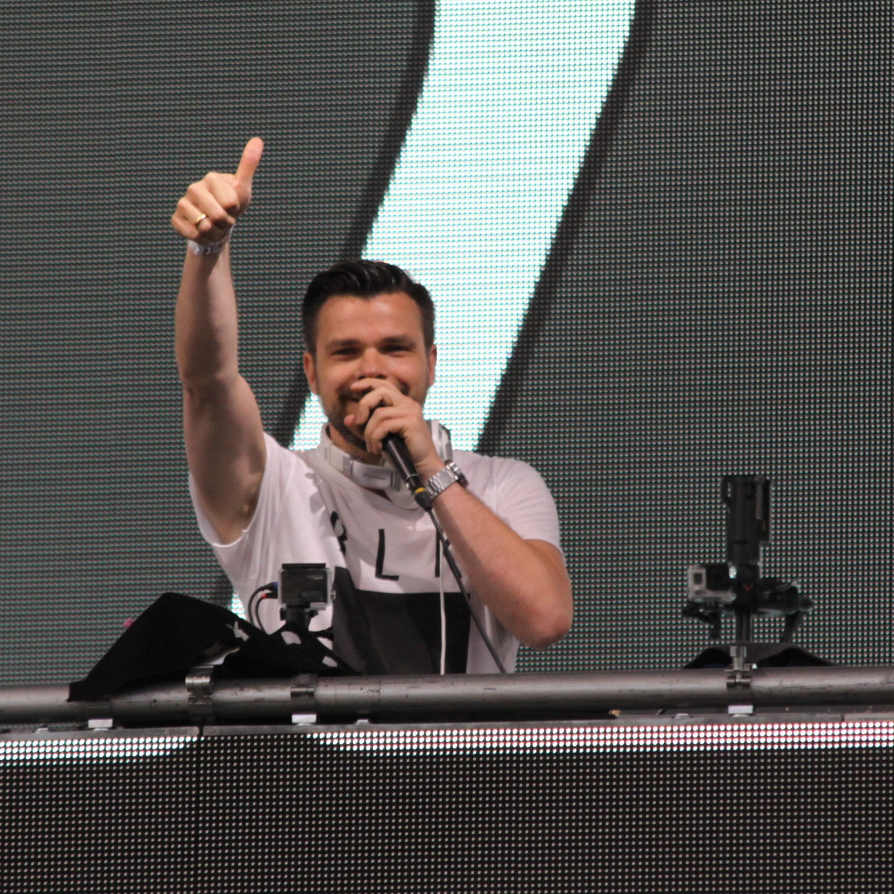
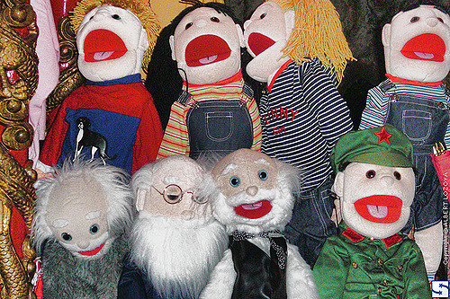
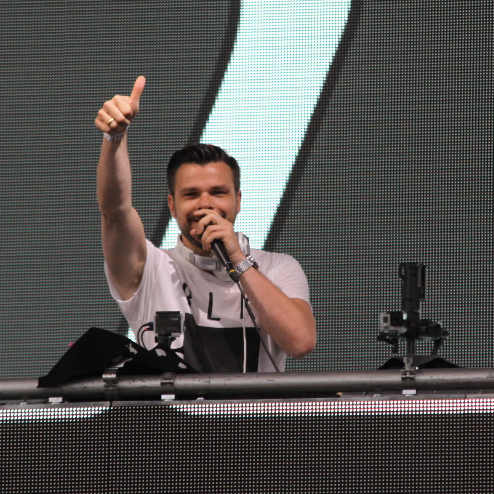

Eco Fest
Who will be performing?
. Everyone's Enviroment : a local four piece, indie band
. Solar Drum : a pop band.
. Green Gizmos : a children's six piece act who use puppets and songs to engage children
. Dj John Alfred : the best dj around
 
